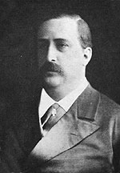
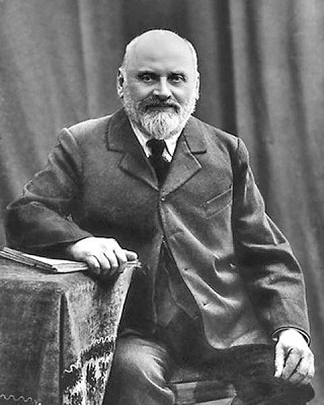

"The Mighty Handful" were five prominent Russian composers of the 19th century, who in the 1860s banded together in an attempt to create a truly national school of Russian music, free of the stifling influence of Italian opera, German lieder, and other western European forms. This peculiar group was formed by Mily Balakirev, César Cui, Modest Mussorgsky, Nikolai Rimsky-Korsakov and Alexander Borodin . All lived in Saint Petersburg, and collaborated from 1856 to 1870.
At the end of the 1850s the brilliant amateur musician Mily Balakirev (1837–1920) gathered a circle of like-minded followers in St. Petersburg with the intention of continuing the work of Mikhail Glinka. His closest comrades became the engineer Cesar Cui (1835–1918; member of the group beginning in 1856), the officers Modest Mussorgsky (1839–1881, member beginning in 1857), and Nikolai Rimsky-Korsakov (1844–1908, member beginning in 1861), and the chemist Alexander Borodin (1833–1887, member beginning in 1862)
The enthusiastic music amateurs sought to create an independent national Russian music by taking up Russian themes, literature, and folklore and integrating Middle-Asian and Caucasian influences, thereby distancing it from West European musical language and ending the supremacy of the latter in the musical life of Russian cities. Balakirev, who had known Glinka personally, was the most advanced musically; his authority was undisputed among the five musicians.
 